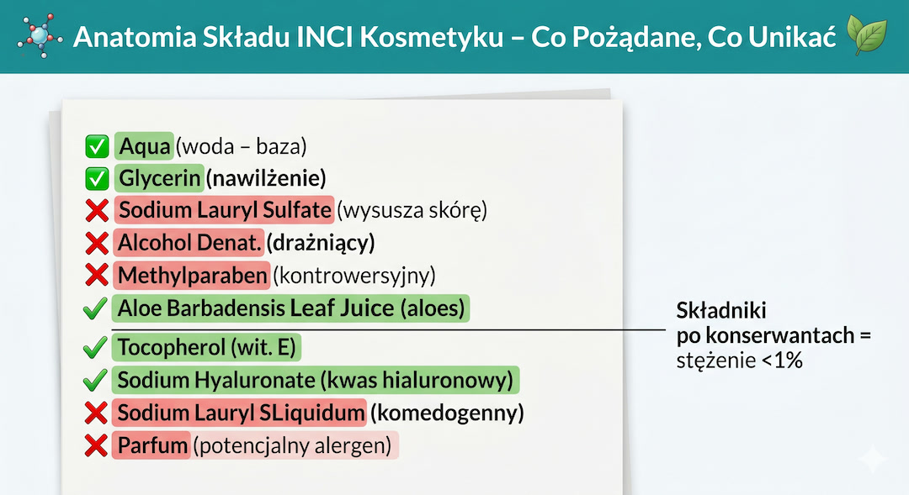
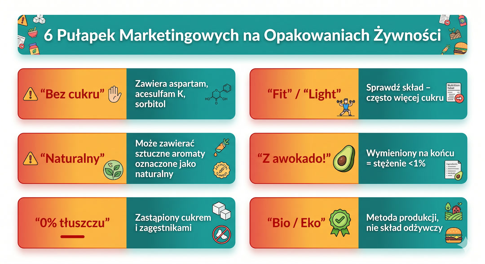

Etykieta to prawda o produkcie, ale napisana małą czcionką i językiem marketingu. Tłumaczymy jak czytać składy, co oznaczają E-numery i gdzie chowa się cukier.
Szybka odpowiedź
Najpierw sprawdź listę składników: w żywności są podawane malejąco według masy, a alergeny muszą być wyróżnione. Potem porównaj wartości na 100 g lub 100 ml, zwłaszcza cukry, tłuszcze nasycone, białko i sól. E-numer oznacza zidentyfikowany dodatek dopuszczony do stosowania, nie automatycznie składnik szkodliwy. W kosmetykach osobno czytaj listę INCI i deklarowane działanie.
Kluczowe wnioski
Etykietę oceniaj według celu produktu, składu, tabeli na 100 g lub 100 ml i alergenów.
- Składniki są wymieniane od największej do najmniejszej ilości – pierwsze trzy to baza produktu.
- E-numer identyfikuje oceniony dodatek; o znaczeniu decydują konkretna substancja, zastosowanie i ilość, nie sam kod.
- W tabeli „cukry” obejmują cukry naturalne i dodane, dlatego porównaj ją z listą składników.
- Nazwa łacińska lub angielska w INCI nie rozstrzyga, czy składnik jest naturalny, syntetyczny, skuteczny lub bezpieczny.
- Aplikacja może tłumaczyć nazwy, ale jej ocena nie zastępuje etykiety ani potrzeb konkretnej osoby.
Etykieta na talerzu – jak wyczytać z niej prawdę?
Zasady są proste, ale trzeba je znać. Na początku patrz przede wszystkim na kolejność składników, bo to ona najszybciej pokazuje, z czego produkt jest zbudowany. Jeśli cukier, syrop albo biała mąka są na czele listy, masz do czynienia z deserem w przebraniu.
Sprawdź prawidłową nazwę żywności, a następnie wartość odżywczą. Tabela podaje energię, tłuszcz, kwasy nasycone, węglowodany, cukry, białko i sól. Do porównania podobnych produktów używaj wartości na 100 g lub 100 ml; deklarowaną porcję wykorzystuj dopiero do policzenia ilości, którą rzeczywiście jesz.
I na koniec: daty. „Najlepiej spożyć przed” to data jakości – po tym terminie produkt może stracić kolor czy zapach, ale zazwyczaj jest bezpieczny. Natomiast „Należy spożyć do” to data bezpieczeństwa – po jej przekroczeniu jedzenie może być po prostu groźne dla zdrowia. Nie myl ich, żeby nie wyrzucać dobrych produktów, ale też nie ryzykować zatrucia.

Tabela wartości odżywczej – nie daj się oszukać małym porcjom?
Porównuj podobne produkty na 100 g lub 100 ml, bo porcja na froncie może być dowolnie mała. Sprawdź energię, tłuszcze nasycone, cukry, białko i sól odpowiednio do celu oraz przelicz ilość, którą rzeczywiście zjadasz. Liczby nie „demaskują” intencji producenta, tylko umożliwiają uczciwe porównanie.
Wartość „na porcję” zależy od wielkości porcji przyjętej na opakowaniu, dlatego najpierw porównaj produkty na 100 g lub 100 ml. Potem przelicz własną porcję. Ten sam produkt może wyglądać korzystnie przy małej porcji, choć rzeczywiście zjadasz jej dwu- lub trzykrotność.
Po 50-tce zwróć uwagę na kwasy tłuszczowe nasycone, cukry i sól, ale oceniaj je w kontekście rodzaju produktu i całego jadłospisu. Wartość „cukry” obejmuje cukry naturalnie obecne i dodane. Przy nadciśnieniu szczególnie użyteczne jest porównywanie soli między podobnymi produktami.
I jeszcze jedna „czerwona flaga”: tłuszcze trans. Na etykiecie kryją się pod hasłem „tłuszcze częściowo utwardzone” lub „uwodornione”. To najgorszy rodzaj tłuszczu dla Twojego serca i naczyń. Jeśli widzisz te słowa w składzie, lepiej zrezygnuj z zakupu.

E-numery – czy naprawdę trzeba się ich bać?
Dla wielu osób litera „E” brzmi groźnie, ale sama w sobie nie oznacza zagrożenia. To kod dodatków dopuszczonych do żywności po ocenie bezpieczeństwa. Kluczowe jest odróżnienie substancji neutralnych od tych, które przy częstym spożyciu warto ograniczać.
Przykładowo E300 to kwas askorbinowy, E330 to kwas cytrynowy, a E322 oznacza lecytyny. Dodatki mają określone warunki stosowania i limity bezpieczeństwa. Jeżeli konkretny barwnik wymaga ostrzeżenia albo masz alergię lub nietolerancję, kieruj się pełną nazwą i informacją na etykiecie, nie samą literą E.
Długość i łatwość wymówienia składu nie mierzą jakości produktu. Jogurt może mieć krótki skład, a pieczywo pełnoziarniste dłuższy przez nasiona i przyprawy. Zamiast liczyć nazwy, sprawdź cel dodatku, wartość odżywczą całego produktu, alergeny oraz częstotliwość spożycia.
Ukryty cukier – producent wie, jak Cię oszukać?
Tutaj skupiamy się na cukrze, bo właśnie on najczęściej ukrywa się pod niewinnymi nazwami. Kilka prostych zasad wystarczy, żeby szybciej wyłapywać dosładzane produkty i nie dać się nabrać na opakowanie z hasłami o zdrowym składzie.
W jednym produkcie może występować kilka źródeł cukrów, na przykład cukier, syrop glukozowy, zagęszczony sok i maltoza. Każdy składnik zajmuje osobne miejsce według swojej masy, więc żaden nie musi znaleźć się na początku listy. Nie zgaduj intencji producenta: sprawdź wszystkie źródła oraz pozycję „w tym cukry” na 100 g.
Syrop z agawy, zagęszczony sok, maltoza, dekstroza i melasa są różnymi źródłami cukrów, a nie identycznymi substancjami. W praktyce ważna jest łączna ilość i częstotliwość spożycia. Sama obecność syropu glukozowo-fruktozowego nie mówi, ile produktu zjadasz ani jaki jest cały jadłospis.
Hasło „bez białego cukru” nie oznacza „bez cukrów”. Syrop daktylowy lub cukier kokosowy nadal wnoszą cukry i energię, choć mogą nieznacznie różnić się składem. Porównaj tabelę wartości oraz pozycję składników, zamiast zakładać pełną identyczność metaboliczną.

Etykiety kosmetyków – czy Twój krem to sama woda?
Na liście INCI najpierw sprawdź bazę produktu, następnie składniki istotne dla Twojego celu i substancje, na które wcześniej reagowała skóra. Kolejność pomaga oszacować udział tylko do progu 1%; bez podanego stężenia sama pozycja nie dowodzi skuteczności kremu ani nie pozwala porównać dwóch różnych formulacji.
W kosmetykach obowiązuje lista INCI. Nazwy botaniczne mogą być łacińskie, a pozostałe składniki mają ujednolicone nazwy; język nie rozstrzyga o pochodzeniu lub bezpieczeństwie. Składniki powyżej 1% są zwykle podawane malejąco, natomiast poniżej tego progu kolejność może być dowolna.
Jeśli skóra po 50-tce jest sucha lub reaktywna, obserwuj jej odpowiedź na cały produkt zamiast automatycznie skreślać pojedynczą nazwę. Detergenty, alkohol denaturowany i kompozycje zapachowe mogą podrażniać część osób zależnie od stężenia i formulacji. Przy nawracającym wyprysku właściwą drogą są testy płatkowe u dermatologa, nie aplikacyjna punktacja INCI.
Aplikacja może rozwinąć nazwę i funkcję składnika, lecz nie potrafi na podstawie samej listy ocenić bezpieczeństwa gotowego kosmetyku dla każdej osoby. Reakcja zależy od stężenia, formulacji i indywidualnej wrażliwości; przy wyprysku potrzebna jest konsultacja dermatologiczna.

Marketingowe triki – jak nie dać się „uwieść” opakowaniu?
Na froncie opakowania oddziel informację regulowaną od swobodnego hasła reklamowego. „Źródło białka”, „bez dodatku cukrów” czy „light” mają określone warunki użycia, lecz nie opisują całego produktu. Po każdym takim haśle odwróć opakowanie i porównaj skład oraz tabelę z produktem z tej samej kategorii.
Kolory ziemi, liście i hasła typu „0% tłuszczu” budują wrażenie, ale nie zastępują tabeli. Usunięcie tłuszczu nie oznacza automatycznie dodania cukru; sprawdź oba produkty. Określenie „light” odnosi się do zadeklarowanej redukcji konkretnej cechy, a nie do całkowitej wartości zdrowotnej.
Inna pułapka to hasło „naturalny”. W prawie spożywczym to słowo nie ma ścisłej definicji. „Naturalny aromat” może być wyprodukowany w laboratorium z naturalnych surowców, ale nie ma nic wspólnego ze świeżym owocem. Z kolei na kosmetykach hasło „naturalny” bez odpowiedniego certyfikatu (np. Ecocert) to czysty marketing, bez żadnych gwarancji.
Traktuj przód opakowania jako reklamę, a decyzję opieraj na obowiązkowych informacjach. Krótka lista składników nie gwarantuje lepszego produktu, podobnie jak długa lista nie przesądza o złym. Liczą się skład, wartość odżywcza, alergeny, porcja i częstotliwość spożycia.

Zobacz też:dietę po 50-tce, ukryty cukier, suplementację po 50-tce oraz badania krwi.
Najczęściej zadawane pytania?
Odpowiedzi dotyczą informacji wymaganych na etykiecie, nie marketingowych ocen aplikacji.
Jak najszybciej sprawdzić, czy warto coś kupić?
Porównaj podobne produkty na 100 g lub 100 ml, sprawdź pierwsze składniki, alergeny oraz sól, cukry, tłuszcze nasycone i białko odpowiednio do celu. Sama liczba składników nie rozstrzyga o jakości.
Czym się różni data „spożyć przed” od „spożyć do”?
„Najlepiej spożyć przed” dotyczy jakości: po tej dacie prawidłowo przechowywany produkt z nienaruszonym opakowaniem może nadal nadawać się do spożycia po ocenie wyglądu, zapachu i smaku. „Należy spożyć do” dotyczy bezpieczeństwa — po tej dacie produktu nie należy jeść.
Jak sprawdzić, czy produkt faktycznie jest polski?
Prefiks 590 oznacza, że numer nadała organizacja GS1 Polska, a nie kraj produkcji. Znak „Produkt polski” ma ustawowe kryteria pochodzenia; przy produktach przetworzonych dopuszcza ograniczony udział składników zagranicznych, dlatego szczegóły sprawdzaj także w oznaczeniu kraju pochodzenia i składzie.
Czy aplikacje do skanowania etykiet są wiarygodne?
Aplikacja może rozwinąć nazwę składnika lub ułatwić porównanie, ale jej ocena zależy od bazy danych i własnego algorytmu. Sprawdź, czy dane odpowiadają bieżącej etykiecie, i nie traktuj koloru lub punktacji jako rozstrzygnięcia o bezpieczeństwie całego produktu.
Źródła?
Podstawą są unijne zasady znakowania żywności, informacje o dodatkach i wymagania dotyczące listy INCI. Zewnętrzna aplikacja może tłumaczyć nazwy, ale nie zastępuje oficjalnej etykiety.
- ALAB Centrum Wiedzy — Jak czytać składy
- DOZ.pl Czytelnia — Dodatki do żywności
- Pacjent.gov.pl — Cukier w produktach
- POLMED Zdrowie — Etykiety spożywcze
- Czytamy Etykiety — Etykiety kosmetyków
- Gov.pl — Przewodnik konsumenta
Uwaga: Artykuł ma charakter informacyjny i edukacyjny. Nie zastępuje konsultacji lekarskiej, diagnozy ani leczenia.